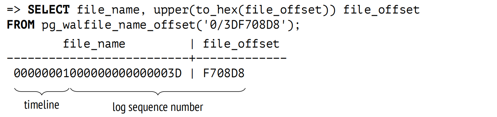
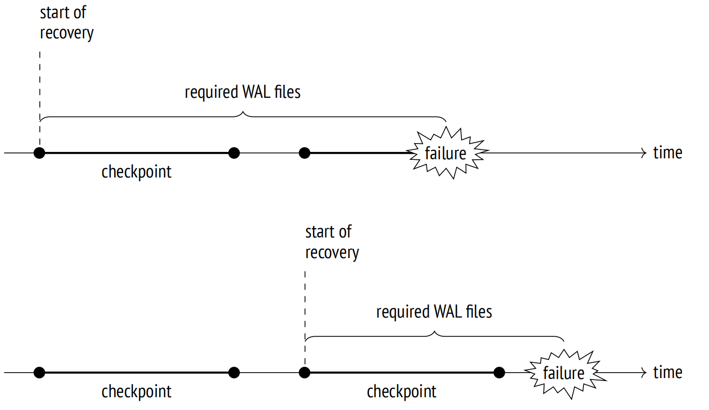
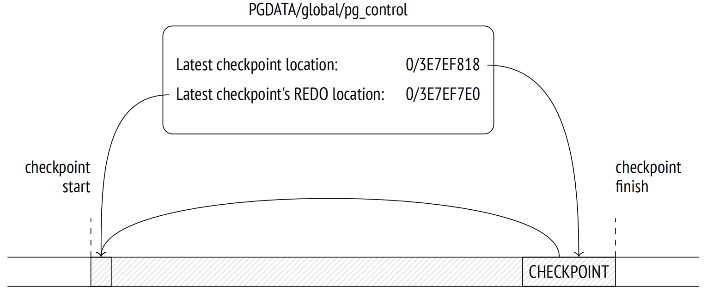
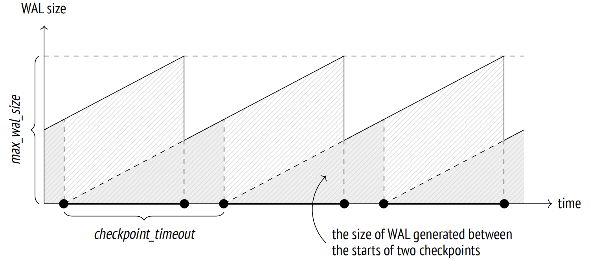

第 10 章：预写式日志
10.1 日志
当发生故障时，例如断电、 操作系统错误或数据库服务器崩溃，RAM 中所有的内容都将丢失；只有写入磁盘的数据才会持久保存。为了在故障之后启动服务器，你必须恢复数据的一致性。如果磁盘本身受损，同样的问题必须通过备份恢复来解决。
理论上，你可以始终保持磁盘上数据的一致性。但实际上，这意味着服务器必须不断地将随机页面写入磁盘(即使顺序写入代价更低)，并且这些写入的顺序必须保证在任何特定时刻都不会损害一致性 (这很难实现，尤其是在处理复杂的索引结构时)。
就像大多数数据库系统一样，PostgreSQL 采用了不同的方式。
当服务器运行时，一些当前数据仅在 RAM 中可用，然后数据被延迟写入至持久化存储中。因此，存储在磁盘上的数据在服务器操作期间总是不一致，因为页面从未一次性全部刷新过。但在 RAM 中发生的每次更改 (例如在缓冲区缓存中进行的页面更新) 都会被记录下来：PostgreSQL 会创建一个日志条目，其中包含了在需要时重复执行此操作所需的所有基本信息 1。
与页面修改相关的日志条目必须在被修改页面本身写入磁盘之前写入，因此得名：预写式日志，或者 WAL。这个要求保证了在发生故障的情况下，PostgreSQL 可以从磁盘读取 WAL 条目，并重放它们以重复已完成的操作，这些操作的结果仍在 RAM 中，在崩溃之前还没有写入到磁盘中。
维护预写式日志通常比将随机页面写入磁盘更高效。WAL 条目构成连续的数据流，即使是 HDD 也能处理。此外，WAL 条目通常比页面大小更小。
所有在发生故障时可能破坏数据一致性的操作都需要被记录。特别是，以下操作会记录在 WAL 中：
- 在缓冲区缓存中执行的页面修改 — 因为写入被推迟了
- 事务提交和回滚 — 因为状态变化发生在 CLOG 缓存中，并且不会立即写入磁盘
- 文件操作 (例如在添加或删除表时创建和删除文件和目录) — 因为此类操作必须与数据更改同步
以下操作不会被记录：
-
在无日志表上的操作
-
对临时表的操作 — 因为它们的生命周期无论如何，都受限于生成它们的会话
在 PostgreSQL 10 之前，哈希索引也不会记录 WAL。它们的唯一目的是将哈希函数与不同的数据类型相匹配。
除了崩溃恢复，WAL 还可以用于从备份中进行时间点恢复以及复制。
10.2 WAL 结构
10.2.1 逻辑结构
在讲述其逻辑结构时，我们可以将 WAL 2 描述为一个可变长度的日志条目流。每个条目都包含了一些关于特定操作的数据，在其前面有一个标准头结构 3。该头结构提供的信息包括：
-
与条目相关的事务 ID
-
解析条目的资源管理器 4
-
用于检测数据损坏的校验和
-
条目长度
-
对前一个 WAL 条目的引用
WAL 通常是向前读取的，但是像 pg_rewind 这样的工具可能会向后扫描。
WAL 数据本身可以有不同的格式和含义。例如，它可以是一个必须在指定的偏移量处替换页面某些部分的页面片段。相应的资源管理器必须知道如何解析和重放特定条目。表、各种索引类型、事务状态和其他实体都有单独的管理器。
WAL 文件在服务器的共享内存中占用特殊的缓冲区。由 wal_buffers 参数定义 WAL 使用的缓存大小。默认情况下，其大小是自动计算的，为总缓冲区缓存大小的 1/32。
WAL 缓存与缓冲区缓存非常相似，但它通常以环形缓冲区模式运行：新的条目添加到头部，而旧条目从尾部开始保存至磁盘。如果 WAL 缓存太小，磁盘同步的执行频率会超出以往。
在低负载下，插入的位置 (缓冲区头部) 几乎总是与已保存到磁盘的条目位置 (缓冲区尾部) 相同：
=> SELECT pg_current_wal_lsn(), pg_current_wal_insert_lsn();
pg_current_wal_lsn | pg_current_wal_insert_lsn
−−−−−−−−−−−−−−−−−−−−+−−−−−−−−−−−−−−−−−−−−−−−−−−−
0/3DF56000 | 0/3DF57968
(1 row)在 PostgreSQL 10 之前，所有函数名都包含了 XLOG 首字母缩写，而不是 WAL。
为了引用特定条目，PostgreSQL 使用了一种特殊的数据类型：pg_lsn (日志序列号，LSN)。它表示从 WAL 开始处到某个条目的 64 位字节偏移量。LSN 以两个 32 位的十六进制数字表示，以斜线分隔。
现在，让我们创建一个表：
=> CREATE TABLE wal(id integer);
=> INSERT INTO wal VALUES (1);开启一个事务，注意 WAL 插入位置的 LSN：
=> BEGIN;
=> SELECT pg_current_wal_insert_lsn();
pg_current_wal_insert_lsn
−−−−−−−−−−−−−−−−−−−−−−−−−−−
0/3DF708D8
(1 row)现在运行任意命令，比如更新一行：
=> UPDATE wal SET id = id + 1;页面修改在 RAM 中的缓冲区缓存中进行。此更改记录在 WAL 页面中，也在 RAM 中。然后，插入的 LSN 向前推进：
=> SELECT pg_current_wal_insert_lsn();
pg_current_wal_insert_lsn
−−−−−−−−−−−−−−−−−−−−−−−−−−−
0/3DF70920
(1 row)为了确保修改后的数据页在相应的 WAL 条目之后被刷新到磁盘，页头存储了与此页面相关的最新 WAL 条目的 LSN。你可以使用 pageinspect 查看此 LSN：
=> SELECT lsn FROM page_header(get_raw_page('wal',0));
lsn
−−−−−−−−−−−−
0/3DF70920
(1 row)整个数据库集簇只有一个 WAL，新的条目不断追加到其中。因此，存储在页面中的 LSN 可能会小于一段时间前 pg_current_wal_insert_lsn 函数返回的 LSN。但是，如果系统中没有发生任何事情，这些数字将是相同的。
现在让我们提交事务：
=> COMMIT;提交操作也被记录下来，插入的 LSN 同样发生了改变：
=> SELECT pg_current_wal_insert_lsn();
pg_current_wal_insert_lsn
−−−−−−−−−−−−−−−−−−−−−−−−−−−
0/3DF70948
(1 row)事务提交会更新 CLOG 页面中的事务状态，这些页面保存在它们自己的缓存中 5。CLOG 缓存通常在共享内存中占用 128 个页面 6。为了确保 CLOG 页面不会在相应的 WAL 条目之前被刷新到磁盘，也必须跟踪 CLOG 页面最新 WAL 条目的 LSN。但这些信息存储在 RAM 中，而不是在页面本身中。
在某个时刻，WAL 条目将被写入磁盘；之后便可以从缓存中逐出 CLOG 和数据页面。如果需要提前逐出，这一情况会被发现，且 WAL 条目会首先被强制写入磁盘。7
如果知道两个 LSN 的位置，那么你可以通过从一个位置减去另一个位置来计算它们之间 WAL 条目的大小 (以字节为单位)。你只需将它们转换为 pg_lsn 类型：
=> SELECT '0/3DF70948'::pg_lsn - '0/3DF708D8'::pg_lsn;
?column?
−−−−−−−−−−
112
(1 row)在此特例中，与 UPDATE 和 COMMIT 操作相关的 WAL 条目占用了大约 100 字节。
你可以使用相同的方式来评估特定工作负载在单位时间内生成的 WAL 条目的数量。这些信息对于设置检查点来说是必需的。
10.2.2 物理结构
在磁盘上，WAL 作为单独的文件或段存储在 PGDATA/pg_wal 目录中。其大小由只读参数 wal_segment_size 表示。
对于高负载系统，增加段大小是有意义的，因为这样可能会减少开销，但是此设置只能在集群初始化期间修改 (initdb –wal-segsize)。
WAL 条目写入当前文件，直至空间用完；然后 PostgreSQL 会创建一个新的文件。
我们可以了解特定条目位于哪个文件中，以及从文件开始的偏移量是多少：

文件名由两部分组成。最高的八位十六进制数字定义了时间线，用于从备份中恢复，而其余部分代表了最高的 LSN 位 (最低的 LSN 位显示在 file_offset 字段中)。
要查看当前的 WAL 文件，你可以使用如下函数：
=> SELECT *
FROM pg_ls_waldir()
WHERE name = '00000001000000000000003E';
name | size | modification
−−−−−−−−−−−−−−−−−−−−−−−−−−+−−−−−−−−−−+−−−−−−−−−−−−−−−−−−−−−−−−
00000001000000000000003D | 16777216 | 2023−03−06 14:01:48+03
(1 row)现在让我们使用 pg_waldump 工具查看新创建的 WAL 条目头部 ，pg_waldump 可以按 LSN 范围 (比如本例) 或特定事务 ID 过滤 WAL 条目。
pg_waldump 工具应以 postgres 操作系统用户启动，因为它需要访问磁盘上的 WAL 文件。
postgres$ /usr/local/pgsql/bin/pg_waldump \
-p /usr/local/pgsql/data/pg_wal -s 0/3DF708D8 -e 0/3DF70948#
rmgr: Heap len (rec/tot): 69/ 69, tx: 886, lsn:
0/3DF708D8, prev 0/3DF708B0, desc: HOT_UPDATE off 1 xmax 886 flags
0x40 ; new off 2 xmax 0, blkref #0: rel 1663/16391/16562 blk 0
rmgr: Transaction len (rec/tot): 34/ 34, tx: 886, lsn:
0/3DF70920, prev 0/3DF708D8, desc: COMMIT 2023−03−06 14:01:48.875861
MSK此处我们可以看到两个 WAL 条目的头部。
第一个是由堆资源管理器处理的 HOT_UPDATE 操作。blkref 字段显示了更新的堆页面其文件名和页面 ID ：
=> SELECT pg_relation_filepath('wal');
pg_relation_filepath
−−−−−−−−−−−−−−−−−−−−−−
base/16391/16562
(1 row)第二个条目是事务资源管理器管理的 COMMIT 操作。
10.3 检查点
为了在故障之后恢复数据一致性 (即执行恢复)，PostgreSQL 必须向前重放 WAL，并将代表丢失变更的条目应用到相应的页面。为了找出丢失的内容，PostgreSQL 会将存储在磁盘上的页面的 LSN 与 WAL 条目的 LSN 进行比较。但是应该从哪个点开始恢复呢？ 如果开始得太晚，这个点之前写入磁盘的页面将无法接收到所有更改，这将导致不可逆的数据损坏。但是从头开始也不现实：不可能存储如此海量的数据，也不可能接受这么长的恢复时间。因此我们需要一个逐渐向前移动的检查点，从这个点开始恢复是安全的，并且可以删除所有之前的 WAL 条目。
创建检查点最直接的方式是定期挂起所有系统操作，并强制刷新所有脏页至磁盘上。这种方式当然是无法接受的，因为系统将挂起相当长的时间。
因此，检查点会随着时间的推移而分散执行，这实际上构成了一个时间间隔。检查点的执行由一个名为 checkpointer 的特殊后台进程执行 8。
检查点开始。checkpointer 进程将所有可以立即写入的内容刷新至磁盘：CLOG 事务状态、子事务的元数据以及其他一些结构。
检查点执行。大部分检查点的执行时间都花在了将脏页刷新至磁盘上 9。首先，在检查点开始时，所有脏缓冲区的头部中都设置了一个特殊标记。这个过程发生得非常快，因为不涉及 I/O 操作。
然后 checkpointer 进程遍历所有缓冲区并将被标记的缓冲区写入至磁盘中。它们的页面不会从缓存中驱逐：只是简单地被写下来，因此可以忽略使用计数和锁定计数。
页面按照它们的 ID 顺序处理，以尽可能避免随机写入。为了更好地平衡负载，PostgreSQL 在不同的表空间之间交替进行 (因为它们可能位于不同的物理设备上)。
后台进程也可以将标记的缓冲区写入磁盘 — 如果后端进程先处理的话。无论如何，此阶段将移除缓冲区标记，因此对于检查点来说，每个缓冲区只会被写入一次。
当然，当检查点正在进行时，缓冲区缓存中的页面仍然可以修改。但由于新的缓冲区脏页没有被标记，因此 checkpointer 进程会忽略它们。
检查点完成。当检查点开始时，所有脏的缓冲区都写入磁盘后，检查点便认为完成了。从现在开始 (但不是更早！)，检查点的起始位置将用作恢复的新起点。在这个点之前写入的所有 WAL 条目都不再需要。

最后， checkpoiner 会创建一个与检查点完成相对应的 WAL 条目，并指定检查点开始的 LSN。由于检查点在开始时不记录任何内容，因此这个 LSN 可以属于任何类型的 WAL 条目。
PGDATA/global/pg_control 文件也会更新，以引用最新完成的检查点 (直到这个过程结束，pg_control 都保持为之前的检查点)。

为了彻底弄清楚这些位点，让我们看一个简单的例子。首先使几个缓存页面变脏：
=> UPDATE big SET s = 'FOO';
=> SELECT count(*) FROM pg_buffercache WHERE isdirty;
count
−−−−−−−
4119
(1 row)注意此时 WAL 的位置：
=> SELECT pg_current_wal_insert_lsn();
pg_current_wal_insert_lsn
−−−−−−−−−−−−−−−−−−−−−−−−−−−
0/3E7EF7E0
(1 row)现在让我们手动完成检查点。所有脏页将被刷新至磁盘；由于系统中没有发生任何事情，因此不会出现新的脏页：
=> CHECKPOINT;
=> SELECT count(*) FROM pg_buffercache WHERE isdirty;
count
−−−−−−−
0
(1 row)让我们看看检查点是如何反映在 WAL 中的：
=> SELECT pg_current_wal_insert_lsn();
pg_current_wal_insert_lsn
−−−−−−−−−−−−−−−−−−−−−−−−−−−
0/3E7EF890
(1 row)
postgres$ /usr/local/pgsql/bin/pg_waldump \
-p /usr/local/pgsql/data/pg_wal -s 0/3E7EF7E0 -e 0/3E7EF890
rmgr: Standby len (rec/tot): 50/ 50, tx: 0, lsn:
0/3E7EF7E0, prev 0/3E7EF7B8, desc: RUNNING_XACTS nextXid 888
latestCompletedXid 887 oldestRunningXid 888
rmgr: XLOG len (rec/tot): 114/ 114, tx: 0, lsn:
0/3E7EF818, prev 0/3E7EF7E0, desc: CHECKPOINT_ONLINE redo
0/3E7EF7E0; tli 1; prev tli 1; fpw true; xid 0:888; oid 24754; multi
1; offset 0; oldest xid 726 in DB 1; oldest multi 1 in DB 1;
oldest/newest commit timestamp xid: 0/0; oldest running xid 888;
online最新的 WAL 条目与检查点完成有关 (CHECKPOINT_ONLINE)。单词 redo 之后指定的是此检查点开始的 LSN；这个位置对应检查点开始时插入的最新 WAL 条目。
相同的信息也可以在 pg_control 文件中找到：
postgres$ /usr/local/pgsql/bin/pg_controldata \
-D /usr/local/pgsql/data | egrep 'Latest.*location'
Latest checkpoint location: 0/3E7EF818
Latest checkpoint's REDO location: 0/3E7EF7E010.4 恢复
服务器启动时启动的第一个进程是 postmaster。接着，postmaster 会启动 startup 进程 10，此进程负责在故障发生时执行数据恢复。
为了确认是否需要恢复，startup 进程会读取 pg_control 文件并检查实例状态。pg_controldata 工具可以查看此文件的内容：
postgres$ /usr/local/pgsql/bin/pg_controldata \
-D /usr/local/pgsql/data | grep state
Database cluster state: in production妥善停止的服务器处于"shut down"状态；非运行状态服务器的"in production"状态表明发生了故障。在此情况下，startup 进程将自动从 pg_control 文件中找到最新完成的检查点的起始 LSN 位置处进行恢复。
如果 PGDATA 目录包含与备份相关的 backup_label 文件，那么起始 LSN 位置就从此文件中获取。
startup 进程从定义的位置开始，逐个读取 WAL 条目，如果页面的 LSN 小于 WAL 条目的 LSN，则将它们应用到数据页。如果页面包含更大的 LSN，那么就不应用 WAL；事实上，也绝不能被应用，因为其条目被设计成是严格顺序重放的。
但是，一些 WAL 条目构成了一个完整的页面镜像，即 FPI。这种类型的条目可以应用于页面的任何状态，因为无论如何，所有页面内容都将被删除。这种修改被称为幂等操作。幂等操作的另一个例子是注册事务状态变化：每个事务状态在 CLOG 页中由某些位定义，无论它们之前的值是多少，都会被设置，因此不需要在 CLOG 页面中保留最新更改的 LSN。
WAL 条目被应用到缓冲区缓存中的页面，就像正常操作期间的常规页面更新一样。
文件以类似的方式从 WAL 中恢复：例如，如果 WAL 条目显示文件必须存在，但由于某种原因丢失了，那么它将被重新创建。
一旦恢复完成，所有无日志表都会被相应的初始分支覆盖。
最后，执行检查点以确保恢复状态安全地写入磁盘。
此时，startup 进程的工作就完成了。
在传统形式中，恢复过程包括两个阶段。在前滚阶段，重放 WAL 条目，重复丢失的操作。在回滚阶段，服务器将中止故障时尚未提交的事务。
在 PostgreSQL 中，不需要第二阶段。恢复之后，CLOG 将不会包含未完成事务 (从技术上来说表示活跃事务) 的提交位或中止位，但由于可以确定该事务不再运行，因此将被视为已中止 11。
我们可以通过强制以 immediate 模式停止服务器来模拟故障：
postgres$ pg_ctl stop -m immediate此处是新的实例状态：
postgres$ /usr/local/pgsql/bin/pg_controldata \
-D /usr/local/pgsql/data | grep 'state'
Database cluster state: in production当我们启动服务器时，startup 进程发现发生了故障，于是进入恢复模式：
postgres$ pg_ctl start -l /home/postgres/logfile
postgres$ tail -n 6 /home/postgres/logfile
LOG: database system was interrupted; last known up at 2023−03−06
14:01:49 MSK
LOG: database system was not properly shut down; automatic recovery
in progress
LOG: redo starts at 0/3E7EF7E0
LOG: invalid record length at 0/3E7EF890: wanted 24, got 0
LOG: redo done at 0/3E7EF818 system usage: CPU: user: 0.00 s,
system: 0.00 s, elapsed: 0.00 s
LOG: database system is ready to accept connections如果服务器正常停止，postmaster 会断开所有客户端，然后执行最终检查点将所有脏页刷新至磁盘。
注意此刻 WAL 的位置：
=> SELECT pg_current_wal_insert_lsn();
pg_current_wal_insert_lsn
−−−−−−−−−−−−−−−−−−−−−−−−−−−
0/3E7EF908
(1 row)现在让我们妥善关闭服务器：
postgres$ pg_ctl stop此处是新的实例状态：
postgres$ /usr/local/pgsql/bin/pg_controldata \
-D /usr/local/pgsql/data | grep state
Database cluster state: shut down在 WAL 的末尾，我们可以看到 CHECKPOINT_SHUTDOWN 条目，表明是最终的检查点：
postgres$ /usr/local/pgsql/bin/pg_waldump \
-p /usr/local/pgsql/data/pg_wal -s 0/3E7EF908
rmgr: XLOG len (rec/tot): 114/ 114, tx: 0, lsn:
0/3E7EF908, prev 0/3E7EF890, desc: CHECKPOINT_SHUTDOWN redo
0/3E7EF908; tli 1; prev tli 1; fpw true; xid 0:888; oid 24754; multi
1; offset 0; oldest xid 726 in DB 1; oldest multi 1 in DB 1;
oldest/newest commit timestamp xid: 0/0; oldest running xid 0;
shutdown
pg_waldump: fatal: error in WAL record at 0/3E7EF908: invalid record
length at 0/3E7EF980: wanted 24, got 0最新的 pg_waldump 信息显示该工具已经读取到了 WAL 的末尾。
让我们再次启动实例：
postgres$ pg_ctl start -l /home/postgres/logfile10.5 后台写
如果后端进程需要从缓冲区中驱逐脏页，它必须先将该页写入磁盘。这种情况是不希望发生的，因为会导致等待 — 在后台异步执行写操作要好得多。
这项工作，部分由 checkpointer 进程处理，但仍然不够。
因此，PostgreSQL 提供了另一个名为 bgwriter 的进程 12，专门用于后台写入。它也依赖和页面驱逐相同的缓冲区搜索算法，除了两点主要区别：
- bgwriter 进程使用自己的时钟指针，这个指针永远不会落后于驱逐指针，并且通常会在它前面。
- 在遍历缓冲区时，使用计数不会减少。
如果缓冲区未被锁定且使用计数为零，那么脏页会被刷新至磁盘。因此，bgwriter 在驱逐之前运行，并主动将那些很可能很快被驱逐的页面写入磁盘。
这提高了被选中用于驱逐的缓冲区是并不是脏的的几率。
10.6 WAL 设置
10.6.1 配置检查点
检查点的持续时间 (更确切地说，将脏的缓冲区写入磁盘的持续时间) 由 checkpoint_completion_target 参数定义。这个值指定了两个相邻检查点开始之间分配给写入的时间比例。不要将该参数设为 1：这可能会导致下一个检查点在前一个检查点完成之前到达。这并不会发生灾难，因为无法同时执行多个检查点，但仍有可能会扰乱常规的操作。
在配置其他参数时，我们可以使用如下方式。首先，定义两个相邻检查点之间适当的用于存储 WAL 的容量。容量越大，开销就越小，但这个值无论如何都会受到可用空间和可接受的恢复时长的限制。
要评估常规负载生成此容量大小所需的时间，你需要记录初始插入 LSN，并时不时检查此位置与当前插入位置之间的差值。
假设获取的数字是一个典型的检查点间隔时间，我们将其用作 checkpoint_timeout 参数的值。默认设置可能太小；通常会增加该值，比如增加至 30 分钟。
但是，可能 (甚至很可能) 负载有时会更高，因此在此时间间隔内生成的 WAL 文件的大小会很大。在这种情况下，必须更频繁地执行检查点。为了设置这样的触发器，我们通过 max_wal_size 参数限制恢复所需的 WAL 文件的大小。当超过这个阈值时，服务器便会触发一个额外的检查点 13。
用于恢复的 WAL 文件包含最新完成的检查点和当前尚未完成的检查点的所有条目。因此，要估算它们的总大小，你应该将计算出的检查点之间的 WAL 大小乘以 1 + checkpoint_completion_target。
在 11 版本之前，PostgreSQL 会为两个已完成的检查点保留 WAL 文件，因此乘数为 2 + checkpoint_completion_target。
按照这种方式，大多数检查点都将按计划执行，每隔 checkpoint_timeout 执行一次； 但是如果负载增加，当 WAL 的大小超过 max_wal_size 值时，便会触发检查点。
实际进展会定期与预期数字进行对比 14：
实际进展由已处理的缓存页面的比例定义。
预期进度 (按时间) 由已流逝的时间比例定义，检查点必须在 checkpoint_timeout × checkpoint_completion_target 时间间隔内完成。
预期进度 (按大小) 由已填充的 WAL 文件的比例定义，预期数量基于 max_wal_size × checkpoint_completion_target 值估算。
如果脏页提前写入了磁盘，那么 checkpointer 进程会暂停一段时间；如果任一参数有任何延迟，它会尽可能追上 15。由于同时考虑到了时间和数据大小，PostgreSQL 可以使用相同的方式管理计划内和按需的检查点。
检查点完成后，不再需要恢复的 WAL 文件便会被删除 16；但是，部分文件 (总共最多 min_wal_size) 会被保留以供重复使用，并且简单地被重命名。
这种重命名操作减少了频繁创建文件和删除文件所带来的开销，但如果你不需要这个功能的话，可以使用 wal_recycle 参数将其关闭。
下图显示了正常情况下，存储在磁盘上的 WAL 文件大小是如何变化的。

请务必记住，磁盘上 WAL 文件的实际大小可能会超过 max_wal_size 值：
- max_wal_size 参数指定了预期的目标值，而不是硬限制。如果负载激增，写入可能会落后于计划。
- 服务器无权删除尚未被复制或连续归档所处理的 WAL 文件。如果启用了此功能，那么必须不断监控，因为它很容易导致磁盘溢出。
- 你可以通过配置 wal_keep_size 参数，保留一定数量的 WAL 文件。
10.6.2 配置后台写入
配置完检查点之后，你还应该配置 bgwriter。总之，这两个进程必须能够在后端进程需要重用之前将脏的缓冲区写入磁盘。
在执行期间，bgwriter 会定期暂停，休眠 bgwriter_delay 参数所指定的单位时间。
两次暂停期间写入的页面数量取决于自上次运行以来后端进程访问的缓冲区的平均数量 (PostgreSQL 使用了一个变化的平均值来平衡可能的峰值，并同时避免依赖非常老的数据)。然后将计算出的数字乘以 bgwriter_lru_multiplier。但无论如何，单次运行写入的页面数量不能超过 bgwriter_lru_maxpages 的值。
如果没有发现脏缓冲区 (即系统中没有发生任何事情)，bgwriter 会休眠，直到其中一个后端进程访问了缓冲区。然后它会醒来并继续执行其常规操作。
10.6.3 监控
基于监控数据，可以并且也应该去调整检查点设置。
如果基于大小触发的检查点执行得比 checkpoint_warning 参数所定义的更频繁，那么 PostgreSQL 会发出警告。此设置应符合预期的峰值负载。
log_checkpoints 参数允许将与检查点相关的信息打印到服务器日志中。让我们打开它：
=> ALTER SYSTEM SET log_checkpoints = on;
=> SELECT pg_reload_conf();现在让我们修改一些数据，并执行检查点：
=> UPDATE big SET s = 'BAR';
=> CHECKPOINT;服务器日志显示了写入的缓冲区数量、检查点后 WAL 文件变更的一些统计数据、检查点的持续时间，以及两个相邻检查点开始之间的距离 (WAL 数据量，以字节为单位)：
postgres$ tail -n 2 /home/postgres/logfile
LOG: checkpoint starting: immediate force wait
LOG: checkpoint complete: wrote 4100 buffers (25.0%); 0 WAL file(s)
added, 1 removed, 0 recycled; write=0.076 s, sync=0.009 s,
total=0.099 s; sync files=3, longest=0.007 s, average=0.003 s;
distance=9213 kB, estimate=9213 kB影响配置决策的最有用的数据是 pg_stat_bgwriter 视图中提供的有关后台写入和检查点执行的统计数据。
在 9.2 版本之前，这两项任务都由 bgwriter 执行；后来，引入了一个单独的 checkpointer 进程，但共用的视图保持不变。
=> SELECT * FROM pg_stat_bgwriter \gx
−[ RECORD 1 ]−−−−−−−−−+−−−−−−−−−−−−−−−−−−−−−−−−−−−−−−
checkpoints_timed | 0
checkpoints_req | 14
checkpoint_write_time | 33111
checkpoint_sync_time | 221
buffers_checkpoint | 14253
buffers_clean | 13066
maxwritten_clean | 122
buffers_backend | 84226
buffers_backend_fsync | 0
buffers_alloc | 86700
stats_reset | 2023−03−06 14:00:07.369124+03这个视图除了其他信息外，还显示了完成的检查点数量：
- checkpoints_timed 字段显示了计划的检查点 (达到 checkpoint_timeout 间隔时触发)。
- checkpoints_req 字段显示了按需检查点 (包括达到 max_wal_size 大小时触发的检查点)。
较大的 checkpoint_req 值 (与 checkpoints_timed 相比) 表明检查点比预期执行地更频繁。
以下统计数据也很重要，与写入的页面数量有关：
- buffers_checkpoint：由 checkpointer 进程写入的页面
- buffers_backend：由后端进程写入的页面
- buffers_clean：由 bgwriter 写入的页面
在配置良好的系统中，buffers_backend 值必须远低于 buffers_checkpoint 和 buffers_clean 的总和。
在配置后台写入时，请注意 maxwritten_clean 值：它显示了 bgwriter 因超过由 bgwriter_lru_maxpages 定义的阈值而不得不停止的次数。
以下调用将重置已收集的统计数据：
=> SELECT pg_stat_reset_shared('bgwriter');-
postgresql.org/docs/14/wal-intro.html ↩︎
-
postgresql.org/docs/14/wal-internals.html
backend/access/transam/README ↩︎ -
include/access/xlogrecord.h ↩︎
-
include/access/rmgrlist.h ↩︎
-
backend/access/transam/slru.c ↩︎
-
backend/access/transam/clog.c, CLOGShmemBuffers function ↩︎
-
backend/storage/buffer/bufmgr.c, FlushBuffer function ↩︎
-
backend/postmaster/checkpointer.c
backend/access/transam/xlog.c, CreateCheckPoint function ↩︎ -
backend/storage/buffer/bufmgr.c, BufferSync function ↩︎
-
backend/postmaster/startup.c
backend/access/transam/xlog.c, StartupXLOG function ↩︎ -
backend/access/heap/heapam_visibility.c, HeapTupleSatisfiesMVCC function ↩︎
-
backend/postmaster/bgwriter.c ↩︎
-
backend/access/transam/xlog.c, LogCheckpointNeeded & CalculateCheckpointSegments functions ↩︎
-
backend/postmaster/checkpointer.c, IsCheckpointOnSchedule function ↩︎
-
backend/postmaster/checkpointer.c, CheckpointWriteDelay function ↩︎
-
backend/access/transam/xlog.c, RemoveOldXlogFiles function ↩︎